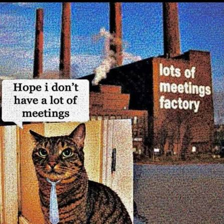
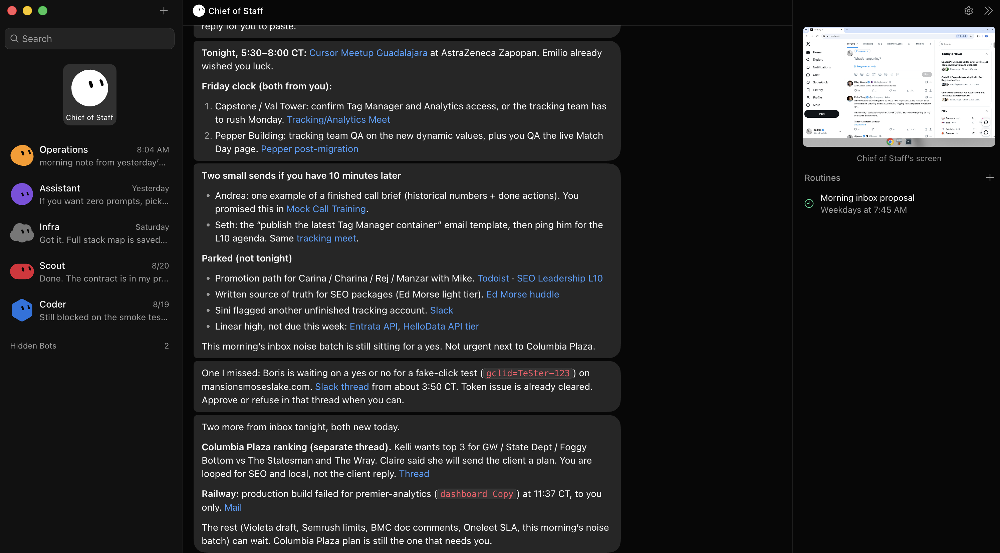
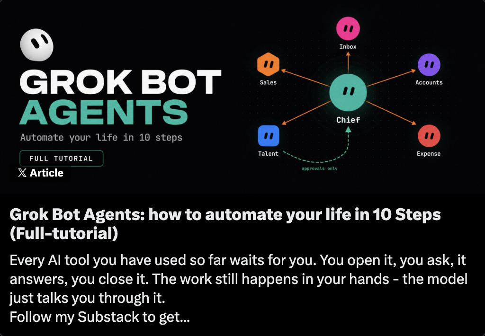
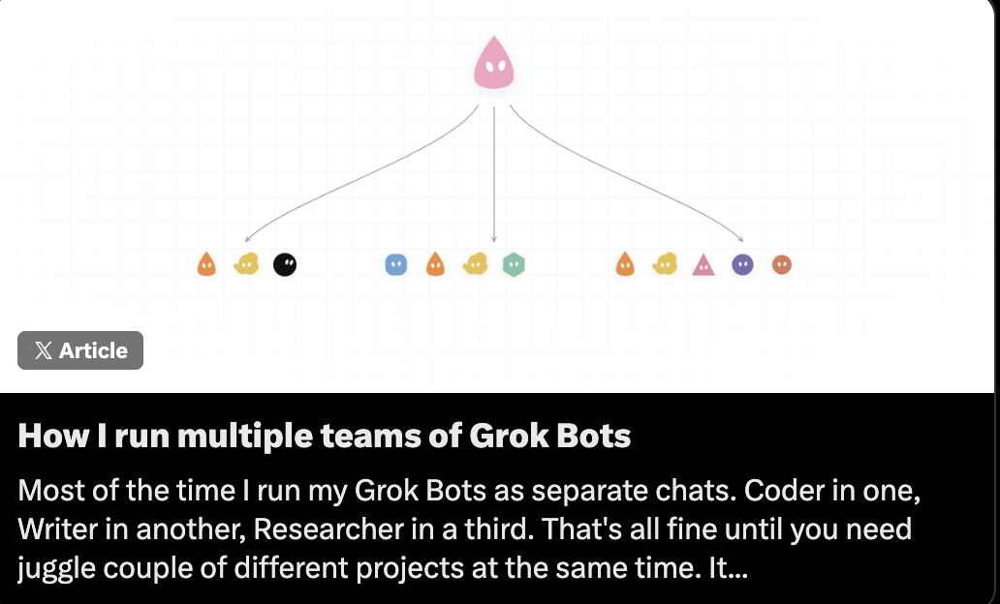
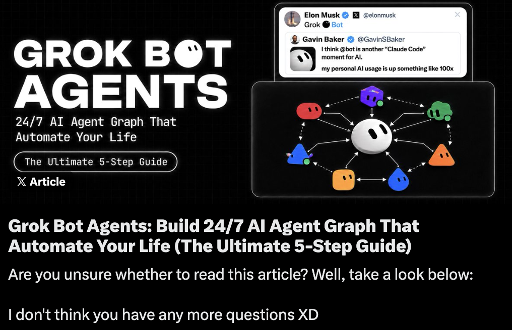

GrokBot: cuida mi enfoque, Cursor codea.


El trabajo operativo genera trabajo administrativo.
Capturar
Compromisos, fechas y decisiones.
Reconstruir
Encontrar dónde vive el contexto.
Aclarar
Qué importa y quién es dueño.
Enrutar
Poner la siguiente acción en su lugar.
Perseguir
Dar seguimiento hasta cerrar.
La actividad termina.
La coordinación apenas empieza.
OpenClaw
Me enseñó lo que un agente podía absorber.
Hermes
Más confiable, flexible y personalizable.
Grok Bot
Menos decisiones para empezar a operar.
“Si para usar mi agente tengo que convertirme en su departamento de TI, no me quitó trabajo: me dio otro empleo.”
Quitar trabajo
de mi plato.
La anatomía de un operador persistente.

Tres formas de organizar agentes.



De señales dispersas a tres decisiones.
Juntas y transcripciones

Email y Slack

Calendario

Sistemas de proyectos


Conocimiento de empresa
Meeting Signals
Decisiones, riesgos, compromisos y cambios que deben durar.
Morning Brief · ≤ 3
Fuentes enlazadas + siguiente acción recomendada.
Detectó una decisión que debía durar.
“Las habilidades no deberían pasar de experimento a Maintenance sin una etapa de adopción.”
↗ Transcripción · reunión de producto“Hace falta capacitación recurrente y una revisión de calidad antes de ampliar el acceso.”
↗ Nota de seguimiento · fuente internaAgregar una etapa Integration antes de Maintenance
para estabilizar adopción y operación.
para sostener el uso, no solo lanzarlo.
antes de llegar a clientes u organización.
Crear la etapa, asignar dueño, definir checklist de QA y fijar la próxima revisión.
Máximo tres cosas que necesitan mi atención.
☀ Morning Brief
3 de 3Etapa Integration
Decisión durable de gobierno de producto.
Transferencia de capacidad
El equipo ya preparó opciones; falta elegir una.
Riesgo de lanzamiento
Dos fuentes discrepan sobre la fecha.
Hacer solo
Investigar, monitorear, deduplicar, organizar, preparar borradores y armar contexto.
Recomendar
Prioridades, delegación, siguiente acción, postura para una junta y ruta de proyecto.
Pedir aprobación
Enviar mensajes, cambiar compromisos, decisiones de clientes o personas, dinero e irreversibles.
“No me traigas problemas; tráeme una recomendación. Pero no remplaces mi juicio.”
Delega una tarea aburrida con la herramienta que ya tengas.
Recurrente
Consume tiempo
Observable digitalmente
Revisable, con salida clara
Su mejor caso de uso de IA probablemente no será el más impresionante. Será esa tarea aburrida que ya no tengan que volver a hacer.
Odyssey IMAX: alertas solo cuando importan.
Revisar en horario
La rutina corre sin que yo abra una pestaña.
Fallback al navegador
Si no hay plugin, usa la web como yo la usaría.
Avisar solo al cumplirse la condición
Formato correcto, cine correcto, función disponible.
El silencio también es una función.